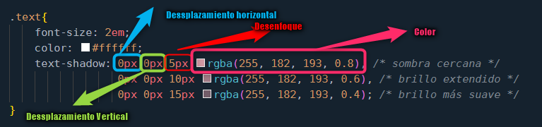
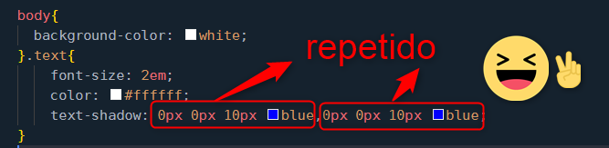
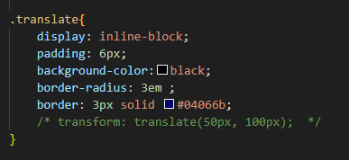
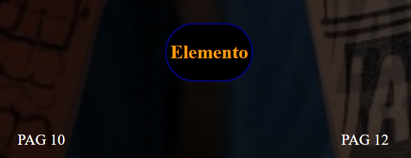
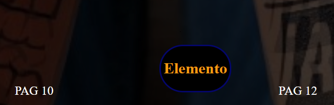
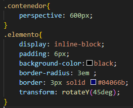

text shadow es una propiedad similar a box shadow, sin embargo presenta algunas diferencias, por ejemplo existe
en ella el primer valor respecta al movimiento de la sombra en el eje x (horizontal), y el segundo valor al movimiento
en el eje y (vertical), el tercer valor se refiere al difuminado de la sombra, pero he aqui la diferencia, en el
cuarto valor no se hace referencia al ancho del difuminado, en este caso el cuarto valor se refiere al color
Define el desplazamiento de la sombra en el eje X. Un valor positivo moverá la
sombra hacia la derecha, y un valor negativo la moverá hacia la izquierda.
Define el desplazamiento de la sombra en el eje Y. Un valor positivo moverá la
sombra hacia abajo, y un valor negativo la moverá hacia arriba.
Controla el nivel de difuminado de la sombra. A mayor valor, más difusa será la
sombra. Este valor no puede ser negativo.
Especifica el color de la sombra. Puedes usar cualquier formato de color CSS, como hexadecimal (#000),
RGB (rgb(0, 0, 0)) o RGBA (rgba(0, 0, 0, 0.3)), donde el canal alfa define la transparencia.
En la siguiente imagen se usan tres tipos de brillo
Obteniendo como resultado:

Mas exactamente la explicacion en el codigo es la siguiente:
Para dar mas intensidad al efecto, es decir que se resalte se coloca: "," y se repite el fragmento de codigo
Se repite las veces que sea necesario para alcanzar la intensidad deseada
Esta propiedad se usa para realizar transformaciones visuales al elemento, por ejemplo
escalarlo (variarlo de tamaño), translacion(movimiento), rotarlo(girarlo) entre otras
Transform, usa una sinataxis basica es primero la propiedad "transform:", seguido del tipo de transformacion
y entre parentesis su valor "()"
Como vemos en la ultima linea, del CSS el rotate se usa y su valor entre los parentesis se da en grados
lo que produce:
Mueve el elemento o en el eje x o en el eje y o en ambos a la ves
translateX(px): Mueve el elemento horizontalmente.
translateY(px): Mueve el elemento verticalmente.
translate(px, px): Mueve el elemento en ambos ejes.
En el siguiente ejemplo vemos como se aplica el movimiento del elemento en ambos ejejes
Con la linea comentada el elemento permanece en su posicion
Aplicando la propieedad se desplaza a la derecha y baja
La propiedad scale, permite cambiar el tamaño de un elemento en el eje x (horizontal), o en el y (vertical)
scaleX(valor): Escala solo en el eje X.
scaleY(valor): Escala solo en el eje Y.
scale(valorX, valorY): Escala en ambos ejes.
Un valor mayor que 1 aumenta el tamaño, mientras que un valor entre 0 y 1 lo reduce.
Entonces vemos el ejemplo aplicado en el CSS:
Ahora el ejemplo de escala aplicada:
Esta propiedad permite inclinar el elemento en referencia a los dos ejes
Se pueden crear transformaciones 3D, para ello se usan propiedades de rotacion ya mencionadas en el eje x y Y,
ademas de añadir, la propiedad perspective, que se aplica al contenedor del elemento y permite, que los elementos,
se vean distorsionados o cercanos, y la rotacion en el eje Z
La propiedad perspective se aplica al contenedor del elemento y define la distancia desde la que estamos "viendo" el elemento 3D.
Una perspectiva baja (como 200px) hace que los elementos parezcan más distorsionados y "cercanos",
mientras que una perspectiva alta (como 1000px) hace que la vista sea más plana.
Sin perspective, las transformaciones 3D no se verán correctamente
La combinacion de todas las propiedades anteriores, produce que se pueda realizar efectos, como el siguiente,
cuando lo combinamos con hover
El anterior video se capturo con screenpreso software gratuito
Click aqui para descargar SCREENPRESSO